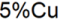

最終更新日：2023/3/31
$や%等の置換表記による変数はスクリプトが実行された時に実際の値として決定されます。
スクリプトが実行されるとき、スクリプトを複数回実行する必要がある場合には、変数置換は問題を引き起こします。これを回避するには、文字列レジスタを直接使用する代わりに、 特別な置換表記を文字列レジスタに割り当てることができます。
サンプル:
次のスクリプトは、Col (B) の値の設定ダイアログの数式をCol(A)[i] - %(Col(B)[U]$)に設定しますが、%(Col(B)[U]$)がCol(B)の単位の値で置換されないようにします。
%A="%"; csetvalue f:="Col(A)[i] - %A(Col(B)[U]$)" c:=Col(B);
凡例の置換表記は、実際の値をレンダリングします。たとえば、予期しない文字列を表示する可能性のある凡例の文字\または％。この状況を回避するには、エスケープシーケンス\ v（）を使用できます。
サンプル:
| サンプル | 入力の方法... | 凡例の結果... |
|---|---|---|
| 5%Cu | 5\v(%)Cu |  |
キーワード:置換, 置換を回避, 置換しない